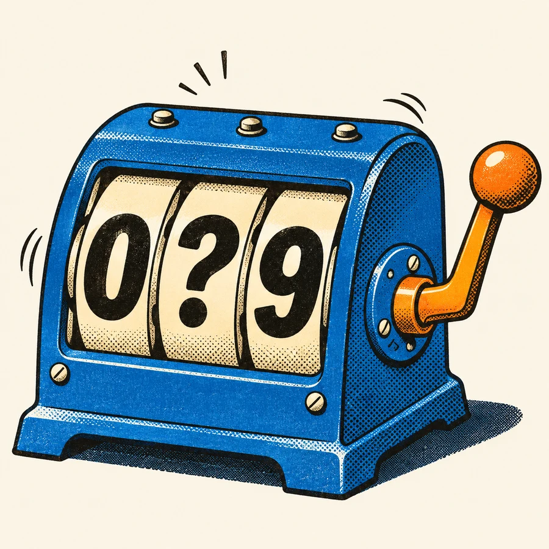

I will choose a number from 1 to 100. Try to guess the number. I will give you hints as you guess.
Type a whole number and press Guess or Enter. You have unlimited tries. Load Game continues your unfinished round on this device.
PayPal Donate via PayPal
Original BASIC program from The Atari Experience by Adrien Z. Lamothe, Jr. (Datamost, pp. 95–97).
Web adaptationCK Created By Christos A. Kazantzoglou